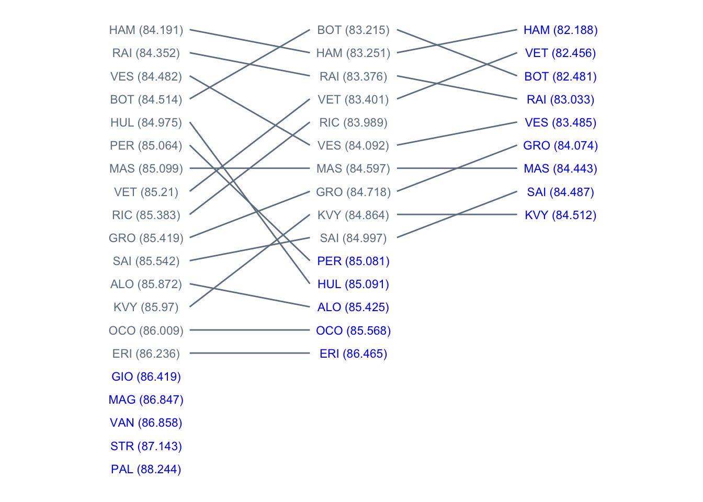
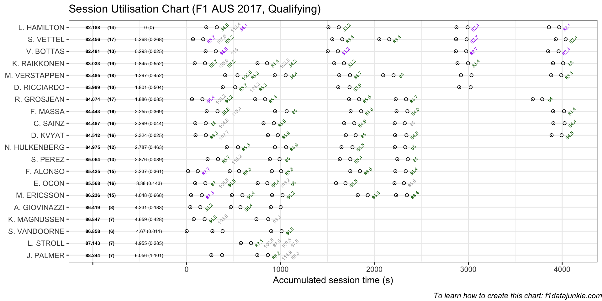
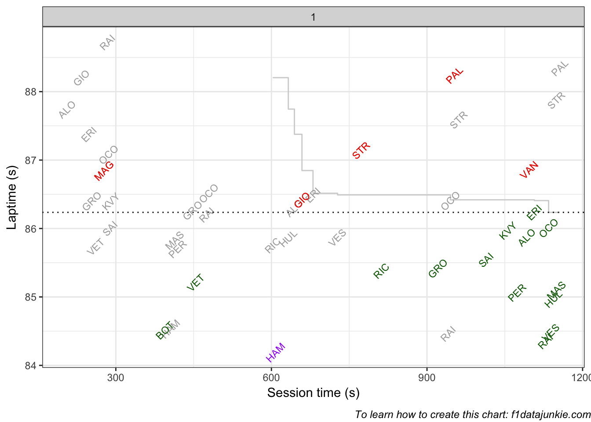
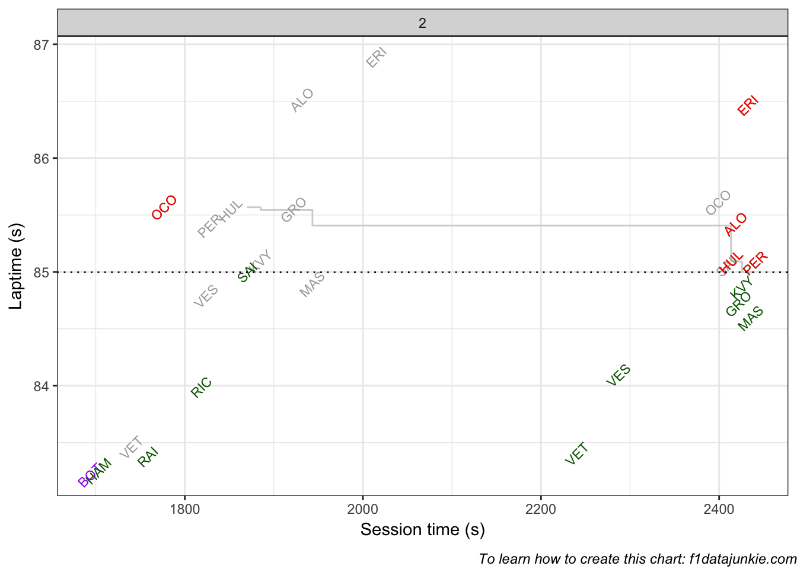
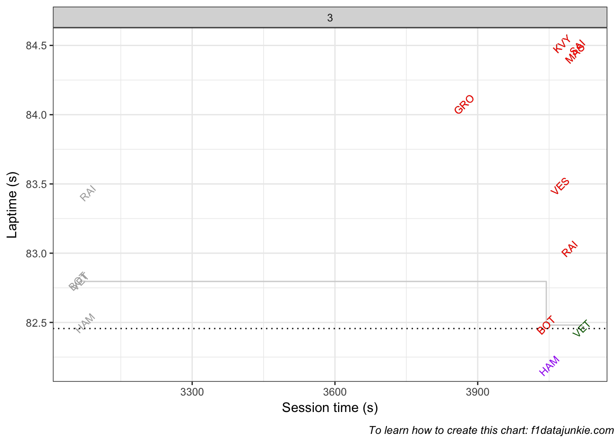

Drivers progressed through the qualifying session as follows: 
The official session results were recorded as follows:
| POS | DRIVER | Q1 | Q2 | Q3 |
|---|---|---|---|---|
| 1 | Lewis Hamilton | 1:24.191 (1) | 1:23.251 (2) | 1:22.188 (1) |
| 2 | Sebastian Vettel | 1:25.210 (8) | 1:23.401 (4) | 1:22.456 (2) |
| 3 | Valtteri Bottas | 1:24.514 (4) | 1:23.215 (1) | 1:22.481 (3) |
| 4 | Kimi Raikkonen | 1:24.352 (2) | 1:23.376 (3) | 1:23.033 (4) |
| 5 | Max Verstappen | 1:24.482 (3) | 1:24.092 (6) | 1:23.485 (5) |
| 6 | Romain Grosjean | 1:25.419 (10) | 1:24.718 (8) | 1:24.074 (6) |
| 7 | Felipe Massa | 1:25.099 (7) | 1:24.597 (7) | 1:24.443 (7) |
| 8 | Carlos Sainz Jr. | 1:25.542 (11) | 1:24.997 (10) | 1:24.487 (8) |
| 9 | Daniil Kvyat | 1:25.970 (13) | 1:24.864 (9) | 1:24.512 (9) |
| 10 | Daniel Ricciardo | 1:25.383 (9) | 1:23.989 (5) | |
| 11 | Sergio Perez | 1:25.064 (6) | 1:25.081 (11) | |
| 12 | Nico Hulkenberg | 1:24.975 (5) | 1:25.091 (12) | |
| 13 | Fernando Alonso | 1:25.872 (12) | 1:25.425 (13) | |
| 14 | Esteban Ocon | 1:26.009 (14) | 1:25.568 (14) | |
| 15 | Marcus Ericsson | 1:26.236 (15) | 1:26.465 (15) | |
| 16 | Antonio Giovinazzi | 1:26.419 (16) | ||
| 17 | Kevin Magnussen | 1:26.847 (17) | ||
| 18 | Stoffel Vandoorne | 1:26.858 (18) | ||
| 19 | Lance Stroll | 1:27.143 (19) | ||
| 20 | Jolyon Palmer | 1:28.244 (20) |
Activity throughout the three qualification sessions took place as follows:

Q3 was interrupted by a red flag event.
The cut-off time in Q1 evolved as follows:

The cut-off time in Q2 evolved as follows:

The cut-off time in Q3 evolved as follows:

To learn how to wrangle F1 results and timing data to create charts like these, see f1datajunkie.com or buy the Wrangling F1 Data With R book.